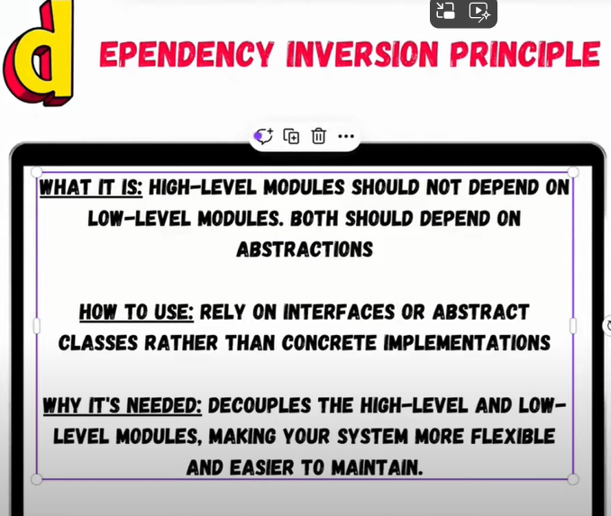

The Dependency Inversion Principle (DIP) is the last
of the SOLID principles in object-oriented design. DIP states that:
High-level modules should not depend on low-level modules.
Both should depend on abstractions (e.g., interfaces or abstract classes).
Abstractions should not depend on details.
Details (implementations) should depend on abstractions.
This principle promotes loose coupling and increases flexibility
by relying on abstractions rather than concrete implementations.
